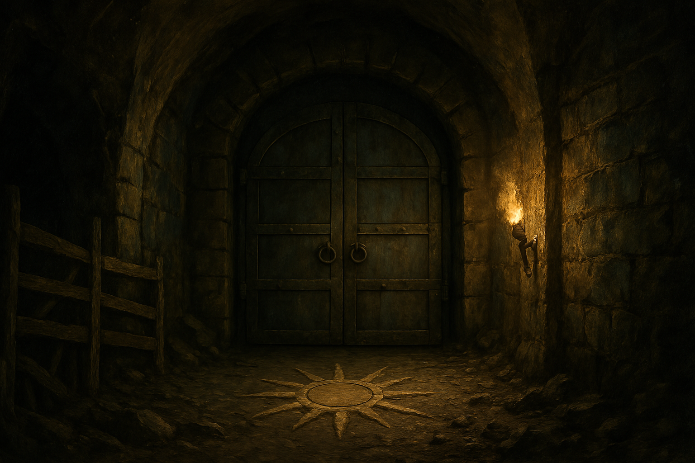

Chapter 4: The Father of Shadows
The Blooming of Macksohn


The Blooming of Macksohn
15048.11.12
一夜過後，龍恩和薩梅爾兩人一早便睡醒，在白磚石的一樓相遇。兩人去了一趟雜貨店，買了酷爆的飼料以及麵包。
兩人決定利用早上的時間，到王宮花園逛逛。探頭探腦的兩人擔心被衛兵發現，卻適得其反，不過走到龍恩身邊的衛兵拿下頭盔—是葛蘭。龍恩藉機向葛蘭打聽了餐廳老闆 Joseph 失蹤事件的後續，卻沒得到多少有用的消息。他也分享了自己打聽到 Joseph 似乎已經不在麥克嵩的事。在葛蘭離開前，龍恩和薩梅爾剛好提到了沙度的名字。葛蘭頓了一下，表示他對這名字有印象。近期麥克嵩衛兵隊有針對隊伍內的可能滲透狀況進行清查，其中沙度就列在名單之內。葛蘭在三向龍恩保障自己和刀疤臉是可信的，不用擔心。
在薩梅爾和龍恩回到白磚石後，大夥在一樓大廳集合，準備前往派頓去找月先生，一起前去探望布拉克。
來到了布拉克家，月先生推開了門。眾人一起在客廳的座椅上坐下，和布拉克的父母面對面。米多莉問起了布拉克的狀況，從布拉克母親那兒得到的卻是「你說的布拉克，是……？」。出於驚詫，眾人決定到「Brock」的房間去看看。
在房間內的床上，是一隻巨大且皮膚黝黑，長滿毛皮的生物。布拉克早已不再能用人型來形容。月先生輕輕地撫摸了布拉克的毛皮，只聽到他發出了微微的低鳴聲。眾人試著去了解布拉克身上發生了什麼事，卻無法理解，但那隻生物，讓他們想起前一天在圖書館中看見的拉茲特獸。
大家和月先生一起在房子外簡單交談。月先生前一天來看布拉克時，他的身上便已開始變黑且開始長毛，他的父母也開始對事實的認知有些錯誤了。這時，早上沒出現的安納戴克也回到了大家身邊。回到布拉克的家中，十分低落，不忍再看一眼布拉克的月先生決定待在客廳和布拉克的父母談話，其他人則回到他的房間繼續調查。
米多莉發現布拉克床底下地板似乎下陷了，他的床板則有些裂痕。安納戴克滑到了床底下調查，發現床板似乎沒有想像中的受損，底下地板的下陷更為嚴重。而比起地底有股什麼力量在吸著布拉克，更像是布拉克身體內的某股力量讓他不斷下沉。
大家一時想不出該怎麼辦，也只好先離開布拉克家。月先生先回事務所去，而其他人則帶領安納戴克去王宮花園前的廣場攤位報名比武大會。在安納戴克擅自作主下，他也幫其他夥伴都報名了比武大會，而大家的稱號分別是：神王之刃安納戴克、方努爾市的測謊機米多莉、膝蓋粉碎者帕拉丁、絕望終局薩梅爾、美人與瘸虎YHWH，以及主教殺手龍恩，雖然龍恩早已以尖頂寺的龍恩報名了。
這時，龍恩的身後傳出了一陣爽朗的笑聲。一回頭，龍恩看見了尚，他在尖頂寺過去擅長打鬥的師兄之一。尚稱讚龍恩比起過去更為成熟，也許已經達到過去師父對他的期待了。隨後，尚則用了「尖頂寺的尚」為名，報名了比武大會。
離開報名會場後，大家先到城門口買了沙威瑪當點心，接著聽從比武大會報名攤位人員的推薦，來到艾德蒙餐酒館用餐。在用餐過程中，店長路易斯前來打招呼，和龍恩表示未來歡迎他回來這裡工作。不久後，一名穿著廚師裝的男子走了出來，詢問龍恩用餐是否滿意。接著他自我介紹自己是艾德蒙，這家店的大廚。他邀請龍恩等等煎個牛排給他吃看看。看見龍恩的眾多夥伴，他便轉念，讓龍恩給每位夥伴各煎一份牛排做為請客。等待的過程中，艾德蒙自己拉了張椅子，在龍恩身邊坐了下來等待。
龍恩用完餐後，艾德蒙便起身，帶領他來到廚房，準備料理。用餐區，薩梅爾拿起他的魯特琴，彈奏了起來，告訴餐廳內的各位，等等會有個廚藝大賽，請大家期待，不過其他客人們似乎沒有很領情。在艾德蒙協助備料下，龍恩順利的煎好了幾份牛排，兩人一起將牛排端到用餐區。除了台北市議員外，因為有準備額外的牛排，附近一些客人也都享用到了龍恩的牛排。艾德蒙坐了下來，切了一小塊牛排，放入嘴裡。他點了點頭，十分肯定龍恩的廚藝。艾德蒙邀請龍恩留下來，在他的餐廳工作，而龍恩僅表示他現在得專心準備幾天後的比武大會，會後要不要留下來再說。
離開了艾德蒙餐酒館，帕拉丁提議想去採購武器，但到處都問不到城內哪裡有打鐵鋪。突然，帕拉丁和YHWH想到，布拉克曾說過他家過去曾經營過打鐵鋪，但因為經營不善而不再營業了。大家決定再去一趟布拉克的家。
在和布拉克的父母打了招呼後，帕拉丁和薩梅爾和布拉克的父親詢問了關於城內打鐵鋪的消息，他表示自己家裡還有些庫存，可以給他們試試。雖然武器因為保存不佳，有些生鏽，不過還算堪用。帕拉丁和薩梅爾分別採買了一兩把武器。
同時，大家到布拉克的房間探望他，發現他的身體又下沉了許多。安納戴克、龍恩和薩梅爾三人試圖將他先搬到旁邊，並想想接著該怎麼做。眾人決定先去能問情報的小黑屋打探消息。
來到小黑屋外，過去曾冒犯到小黑屋主人的米多莉和YHWH待在屋外，讓其他人去問事。付出了相應的代價（金幣、以及安納戴克的武器），大家得到了一些消息：能用拉茲特獸毛皮製作隱形斗篷的人，在麥克嵩目前僅有闇影之父一人；闇影之父並非大家所認知的那個人；家亨被關在王宮的室內，且最近快要出來了；法朗茲住在布蘭登的角落的107號房。
大家討論後，決定薩梅爾、帕拉丁和安納戴克去布蘭登的角落拜訪法朗茲，詢問更多關於闇影之父的消息；米多莉、YHWH和龍恩則回到布拉克家，思考該怎麼處理布拉克。
來到布蘭登的角落，Samael、帕拉丁和安納戴克順利的到了法朗茲的房間。在說明來意後，法朗茲警戒的確認門窗是否緊鎖，且拉上窗簾。他翻開他密密麻麻的筆記本，說明當時自己的冒險夥伴都是被闇影之父害死的。另外，大家所見到的斗篷人，其實是拉索斯教的傳訊者，而且會出現在各個不同城市，至於他的真身，沒有人清楚。法朗茲似乎還有很多知道的事，但是卻沒有完全透露給冒險者們。
另一方面，米多莉、YHWH和龍恩回到了布拉克家。在布拉克的房間，他們意外的發現布拉克已經消失了，而地板也被挖了一個大洞，深度大約是一個人的身高。跳入洞內，左右兩側是看起來早已被打通的通道。三人戰戰兢兢地向內探索，直到發現遠方出現了三對發亮的眼睛。那三對眼睛的主人，便是三頭拉茲特獸。米多莉拿出麵包，想釋出善意，也許有機會能辨認出哪一隻是布拉克。他丟了一塊麵包在拉茲特獸前方，最右方的那隻緩緩走了出來，叼起麵包，看了看他們。回到洞口YHWH順利地爬上地面。龍恩似乎遇上了困難，不但爬不上來，還意外破壞了洞口，讓爬上地面更加困難。在YHWH的求助下，布拉克的父親提供了木梯和繩子。雖然龍恩又破壞了木梯，但是靠著繩子，龍恩和米多莉都順利回到了地面。
暫時離開了布拉克家，三人決定先回白磚石，準備好冒險工具，和其他三位夥伴一起再次出發，回到布拉克家，朝地底探索。
回到了布拉克家，台北市議員從布拉克床下的地洞進入，由安納戴克帶頭，一路往前走。中途，大家停在了一處上方有開口的地方。安納戴克爬了上去，發現似乎是在麥克嵩較為貧窮地區的一處古井，但是由於不曾來到城市的這一端，安納戴克也無法判斷這個開口位於何處。
繼續前行，安納戴克聽見遠方似乎有著吟唱聲，但是判別不出實際的來源。不久後，他看見前方有一座巨大的金屬門，似乎就是吟唱聲的來源。衝動之下，他將雙開門用力打開，看見門內有不少身穿黑色斗篷，帶著面具的人（安納戴克判斷為拉索斯的教眾）繞著圈，正在吟唱著。發現事情不太對勁，安納戴克趕緊將門關上。台北市議員討論著該怎麼辦，於是決定讓安納戴克再次開門，但是只開門縫。然而，在門縫被打開時，他們看見門縫內是一整排的面具臉，將門堵得密密麻麻的。然而，這些教眾卻又沒有任何攻擊性，指隨著外面安納戴克的動作移動眼神。安納戴克索性把整扇門都打開，發現整面空間都擠滿了戴著面具的臉，少說至少有二、三十張臉。冒險者們不知道該怎麼辦，只好再將門關上，朝著門右側的方向快步離開。
走著走著，安納戴克發現正前方的道路逐漸從砂石地變成潔白的大理石，而且開始出現有雕刻的石柱。石柱上，有著不少有十道光芒太陽的符號，讓眾人感到十分起疑。在路的底端是一座樓梯，米多莉想貼在門上聽聽門外的聲音，卻被安納戴克用力撞開門。
門外傳來歡欣的音樂聲，但裡面的空間有些陰暗。隨著安納戴克帶頭走了出去，眾人發現自己身處於劇院中，而這劇院正是崔尼斯劇院。舞台上演出的似乎是個雜技團，演員包含著各種不同生物。除了龍恩外，眾人盡可能低調地找了離門口較近的座位坐了下來，思考是否該逃離劇院。而龍恩則警戒地站在沒有關上的門邊。然而，米多莉沒有熄滅的火把引起了其他觀賞者的不滿，請了劇院的工作人員前來勸導。
龍恩看見劇院後方有個中老年瘦弱的身影走了進來，逐步朝著他的方向前進，是他前一天在劇院售票亭認識的售票員，納撒尼爾。納撒尼爾走向了米多莉，請他把火把熄滅，接著走到了通往地下的門口，將門鎖上，口中碎念著「這門怎麼會沒有鎖上？」。龍恩低下頭，似乎不想被前一天對他印象還不錯的納撒尼爾認出來。安納戴克和米多莉來到了門前，向納撒尼爾詢問關於這扇門的事，納撒尼爾僅表示這是上面的人叫他一定要鎖上的，但是他並不了解這扇門會通往哪裡。
秀尚未演完，冒險者們先行從劇院走了出來，來到售票亭，並向納撒尼爾要了張這場秀的節目單。秀的名字叫「賽門雜技團」，團長是賽門・方索，且雜技團宣稱演出者是來自各地的不同生物，絕對精彩。
離開劇院後，冒險者們猶豫著要去哪裡吃晚餐，最後他們決定去日出酒館，順便看看法蘭基將餐館經營得如何。
日出酒館的生意十分慘淡，除了冒險者們外，總共只有三個客人。法蘭基喝斥著要他們不能併桌，而且餐點和他們索取高價，食物又像廚餘一般難吃。在情緒極度不滿之下，安納戴克繞進了廚房，拿著他的大砍刀，朝向法蘭基的右肩揮下。法蘭基發出了慘烈的叫聲，剩下的其他客人見到狀況不太好，趕緊逃離了日出酒館。
大家把法蘭基趕緊裝入了百寶袋中，並把日出酒館的門鎖上，用餐區的燈也關了。龍恩來到了熟悉的廚房，尋找可用的食材下廚：除了麵包外，只剩下三塊牛排保存的還能食用，其他食物都狀況奇慘無比。不過龍恩也找到了一大塊起司，雖然辨別不出種類，但是看起來十分美味，於是便收在了自己的背包內。
在廚房後的休息室，眾人用盡了各種方法恐嚇從百寶袋裡抬出的法蘭基，終於從他身上以及櫃檯拿走了不少金幣。龍恩試著從法蘭基口中問出喬納森老闆的下落，但法蘭基絕口不提，僅在最後大家將他裝回 bag of holding 前，吐出了一個地名：瑟巴諾，距離麥克嵩不遠的一座城鎮。
冒險者們回到陰暗的用餐區享受龍恩準備的餐點。龍恩隱約看見日出酒館外，有個紅髮的男子瞧著裡面。趕緊吃完後，大家將血跡清理乾淨，燈光熄滅後，便從日出酒館後門悄悄離開。
大家繞回了布拉克家，想利用晚上時間將通往地下的入口封起來，但應門的布拉克母親表示他的老公已經休息了，希望大家隔日再來，比較不會打擾。
回到白磚石，冒險者在櫃檯討論著怎麼分房睡，櫃檯的人員建議他們可以住通鋪，於是大家便決定試試看著通鋪。白磚石的通鋪裡面可以睡得下八個人，空間十分足夠。
入夜後，安納戴克在夢中聽見了神王尼可的聲音。靠著大法師烏西奧尼的翻譯，安納戴克了解神王尼可說著要他繼續跟隨沃瓦倫的惡魔，也肯定目前他做得很正確。
15048.11.13
日出後不久，大家都醒來了。眾人簡單收拾後，到了一樓大廳，櫃檯內的人正是荒野旋律的小粉絲凱斯。米多莉向凱斯詢問了附近的麵包店以及雜貨店，便起身前往。大家在麵包店內簡單買了一些各種口味的麵包作為乾糧。到了雜貨店，大家則補了繩子、打火盒、被褥等各式用品，以及梯子。
再次回到布拉克家，大家進入了布拉克的房間，搭上梯子，逐一爬到了地下。在複雜的地下城，冒險團邊走邊畫地圖。過程中，米多莉和安納戴克一度掉入了陷阱中，但也安全逃離。安納戴克和帕拉丁也在先前發現的古井處爬出，稍微遊歷了附近的街道，並向其中一位行乞的少女，詢問到此處是麥克嵩舊城區的金石街，過去是繁榮的商業區，如今卻都是貧民區，以及無家可歸的流浪漢。
在一處看似粗糙挖出的洞穴，安納戴克帶著大家向前爬行，卻逐漸感受到濕氣，而最終決定掉頭離開。
在地下城中，冒險者們也找到了一處由木頭柵欄圍起的空間，裡頭有七隻拉茲特獸。看著受苦的拉茲特獸，米多莉想藉由殺死他們來讓他們擺脫痛苦，YHWH和龍恩也同意；薩梅爾則於心不忍，而安納戴克則不想動手殺死他們，只想吃拉茲特獸的肉。最終，在冒險者們沒有想到周全殺死拉茲特獸的方法下，決定將他們留在這裡，不多做決定，便離開了。
在離開地下城前，冒險者們決定回到前一天看見拉索斯教眾集會的空間進行搜索。米多莉、龍恩、YHWH和安納戴克進入了房間內，而帕拉丁和薩梅爾則在門外警戒。YHWH透過火光，發現了房間內有大量的方形櫃子，上面編有號碼1到60號，但是上鎖了，於是他決定用火將木製的櫃子燒開。同時，米多莉發現地上有畫著各式圖騰與符號，經過嗅聞後沒有聞到奇異的味道，於是便嘗試用舌頭舔舐，卻因此昏迷了。
我只是想嚐嚐看有沒有說謊的味道。
米多莉，在地下城昏迷後
在木櫃被火勢燒開後，YHWH發現櫃子內收的是前一天大家看見拉索斯教眾所穿的黑袍與白色面具，於是YHWH便搜刮了不少，裝在百寶袋內。然而，火勢逐漸展開，且蔓延的速度極快。在眾人發現並趕緊逃出後，才發現米多莉倒在裡面。穿著鎖子甲的米多莉不容易搬動，安納戴克和龍恩輪番搬了好多次才終於將米多莉搬了出來，且龍恩還受了傷。
好不容易將米多莉搬出，且將厚重的金屬門關上後，龍恩在門前坐著休息，卻感受到金屬門逐漸發燙，於是趕緊跳開。跑向來側躲避的薩梅爾和龍恩在火勢從門內炸開時被火焰燙傷，十分嚴重，但還來得及繼續逃跑；扛著米多莉的安納戴克與YHWH和帕拉丁等人向崔尼斯劇院的方向逃竄。兩方人馬就此分散。
跑回布拉克房間的底下，龍恩和薩梅爾順利的爬回地面，坐在地上喘息。簡單喘口氣後，兩人趕緊回到白磚石休息。
另一方面，安納戴克等人將米多莉搬到通往崔尼斯劇院的暗門，卻因為搬了太久，肌肉開始疲乏，而難以在搬開暗門後將米多莉搬出。隨著火勢逐漸往劇院焚燒，安納戴克向著劇院內大喊「失火了」，卻只見劇院內的觀眾向外逃竄，只有兩名工作人員（包含大家前一日所見到的納撒尼爾）趕來了解狀況。進入劇院的帕拉丁藉著紫羅蘭給他的別針，要求兩名工作人員前來協助將米多莉搬到劇院內。然而，因為火勢的關係，安納戴克與兩名工作人員依然無法將米多莉搬出來。面臨即將燒來的火與尚未清醒的米多莉，安納戴克將掛在胸前神王尼可的手指項鍊拋向劇院內，讓YHWH收著，帕拉丁則趕緊前來一起搬米多莉。最終，在火燒入劇院的那一刻，四人終於將米多莉搬到劇院內，但安納戴克和兩名工作人員卻已被大火燒傷，陷入昏迷狀態。靠著最後的意志力，YHWH和帕拉丁將安納戴克與米多莉一路拖到劇院入口，而工作人員只能倒在原地，直到他們的生命被持續竄出的火勢燒盡。
崔尼斯劇院門口，YHWH決定跑去找人救援，而帕拉丁則在原地照顧昏迷的米多莉和安納戴克。經過簡單的檢查後，帕拉丁判斷米多莉生命跡象相對穩定，只是不知道為何昏迷了；安納戴克則是身受重傷，在生與死的邊緣徘徊。靠著不甚熟悉的治療法術，帕拉丁順利的將安納戴克從死亡關頭救回，雖然狀態不佳，但至少恢復意識了。兩人吃著手邊的乾糧，等待YHWH搬來的救援。
YHWH首先到了城門旅店，請求凱文來拯救他心愛的米多莉，但凱文貌似瀟灑地告訴他，自己已經放下米多莉，不在意他了。心灰意冷的YHWH只好轉向月先生，前往派頓去找他。在簡單說明後，月先生帶著YHWH，一起去找人（以及擔架）協助。
在月先生找來的人力幫助下，YHWH等人回到了劇院門口，將逐漸穩定的安納戴克與仍然昏迷中的米多莉用擔架搬到月先生的辦公室去。在前來幫忙的人離開前，YHWH請他們協助到白磚石通知薩梅爾和龍恩，但是因為不知道房間號碼，無法保證是否能成功傳話。
在月先生和冒險者們道別後，YHWH、帕拉丁、安納戴克和米多莉便在派頓內過夜休息，卻遲遲沒有等到薩梅爾和龍恩的出現。
15048.11.12
After a night's rest, Ron and Samael were both up early and ran into each other on the first floor of White Brick. The two made a trip to the general store, where they bought feed for Kubao and some bread.
They decided to use the morning to stroll around the Royal Garden. Their furtive behavior, meant to avoid drawing the guards' attention, had the opposite effect. But when the guard who approached Ron removed his helmet, it turned out to be Glen. Ron used the chance to ask Glen about any follow-up on restaurant owner Joseph's disappearance, though he did not get much useful information. He also shared that he had heard Joseph seemed to no longer be in Macksohn. Just before Glen left, Ron and Samael happened to mention the name Sha'Doom. Glen paused and said the name sounded familiar. Recently, the Macksohn guard had been investigating possible infiltration within their ranks, and Sha'Doom was on that list. Glen repeatedly assured Ron that both he and Scar-Face were trustworthy and that there was nothing to worry about.
After Samael and Ron returned to White Brick, the whole group gathered in the first-floor lobby and prepared to head to Patton's to find Mr. Moon, so they could visit Brock together.
When they arrived at Brock's house, Mr. Moon pushed open the door. Everyone sat down in the living room across from Brock's parents. Midori asked about Brock's condition, only for Brock's mother to reply, "The Brock you're talking about is...?" Shocked, the group decided to go take a look at "Brock's" room.
On the bed in the room lay a huge, dark-skinned creature covered in fur. Brock could no longer be described as humanoid. Mr. Moon gently stroked Brock's fur and heard only a faint low growl in response. The group tried to understand what had happened to him, but could make no sense of it. The creature reminded them of the Laztek they had seen in the library the day before.
Outside the house, everyone had a brief conversation with Mr. Moon. When he had visited Brock the previous day, Brock had already begun turning black and growing fur, and his parents had already started becoming confused about reality itself. At that point, Anedak, who had not shown up earlier that morning, also rejoined them. Back inside Brock's house, a deeply upset Mr. Moon, unable to bear looking at Brock again, decided to stay in the living room and talk with Brock's parents while the others returned to the room to continue investigating.
Midori noticed that the floor under Brock's bed seemed to have sunk, while the bedframe itself was slightly cracked. Anedak slithered underneath the bed to investigate and found that the bedframe was less damaged than expected, while the floor beneath it had sunk even more severely. Rather than some force from underground pulling Brock downward, it seemed more like some power inside Brock himself was causing him to keep sinking.
No one could think of what to do for the moment, so they had no choice but to leave Brock's house. Mr. Moon returned to his office, while the others took Anedak to the tournament registration stall in the square before the Royal Garden. Acting on his own initiative, Anedak also registered the rest of the companions for the tournament. Their titles became: Anedak, Blade of the God King; Midori, Lie Detector of Fanaur City; Paladin, Knee Crusher; Samael, End of Despair; YHWH, Beauty and Lame Tiger; and Ron, Bishop Slayer, though Ron had already registered earlier as Ron of Peak Temple.
At that moment, a hearty laugh rang out behind Ron. Turning around, Ron saw Sean, one of his senior brothers from Peak Temple who had once excelled in combat. Sean praised Ron for having grown more mature than before and said perhaps he had finally reached what their master had once hoped for. After that, Sean registered for the tournament as "Sean of Peak Temple."
After leaving the registration area, the group first bought some shawarma by the city gate as a snack, then followed the recommendation of the tournament staff and went to Edmond's Diner for a meal. During the meal, manager Lewis came by to greet them and told Ron he would be welcome to come back and work there in the future. Not long after, a man in chef's clothes came out and asked Ron whether he was satisfied with the meal. He then introduced himself as Edmond, the head chef of the establishment. He invited Ron to cook him a steak in a little while. Seeing that Ron had so many companions with him, Edmond changed his mind and asked Ron to cook a steak for each of them as a treat. While waiting, Edmond pulled up a chair and sat down beside Ron.
After Ron finished eating, Edmond stood up and led him to the kitchen to start cooking. Out in the dining area, Samael took up his lute and began to play, announcing to the restaurant that a cooking contest would soon begin and asking everyone to stay tuned, though the other diners seemed less than thrilled. With Edmond's help preparing the ingredients, Ron successfully cooked several steaks, and the two of them brought them out together. Since there were extra steaks beyond those for the Taipei City Councilors, a few nearby diners also got to taste Ron's cooking. Edmond sat down, cut off a small piece of steak, and put it in his mouth. He nodded, very impressed with Ron's culinary skill. Edmond invited Ron to stay and work at the restaurant, but Ron only replied that for now he had to focus on preparing for the tournament a few days later, and that he would decide whether to stay after it was over.
After leaving Edmond's Diner, Paladin suggested going to buy some weapons, but no matter where they asked, no one could tell them where to find a blacksmith in the city. Then Paladin and YHWH remembered that Brock had once said his family used to run a smithy but stopped because business went poorly. The group decided to visit Brock's house again.
After greeting Brock's parents, Paladin and Samael asked Brock's father about blacksmiths in the city. He said he still had some old stock at home that they could try out. The weapons were somewhat rusty from poor storage, but still usable. Paladin and Samael each bought one or two weapons.
At the same time, the others went to check on Brock in his room and found that his body had sunk much farther down. Anedak, Ron, and Samael tried to move him aside first while thinking about what to do next. In the end, everyone decided to visit the little black house to gather information.
When they reached the little black house, Midori and YHWH, having offended its owner before, stayed outside while the others went in to ask questions. After paying the required price in gold and one of Anedak's weapons, they learned several things: the only person currently in Macksohn capable of making invisibility cloaks from Laztek fur was the Father of Shadows; the Father of Shadows was not the person everyone assumed he was; Jiaheng was being held inside the palace and would likely be released soon; and Franz was staying in room 107 at Brandon's Corner.
After discussing it, the group decided that Samael, Paladin, and Anedak would go visit Franz at Brandon's Corner and ask for more information about the Father of Shadows, while Midori, YHWH, and Ron returned to Brock's house to think about what to do with Brock.
At Brandon's Corner, Samael, Paladin, and Anedak successfully reached Franz's room. After they explained why they had come, Franz cautiously checked that the doors and windows were tightly shut and drew the curtains. He opened his densely packed notebook and explained that his former adventuring companions had all been killed because of the Father of Shadows. He also said that the cloaked figure the adventurers had seen was actually a messenger of the Laxthos, and that such a figure appeared in many different cities. As for the true identity behind that messenger, no one knew. Franz clearly knew much more, but he did not reveal everything to the adventurers.
Meanwhile, Midori, YHWH, and Ron returned to Brock's house. In Brock's room, they were shocked to discover that he had already vanished, and that a large hole about a person's height deep had been dug into the floor. Jumping down into it, they found passageways already opened on both the left and right sides. The three cautiously explored inward until they saw three pairs of glowing eyes in the distance. The owners of those eyes were three Lazteks. Midori took out some bread, hoping to show goodwill and perhaps identify which one was Brock. She tossed a piece of bread in front of them, and the creature on the far right slowly stepped forward, picked it up in its mouth, and looked at them. Back at the hole, YHWH successfully climbed out first. Ron had more trouble: not only could he not climb out, he also accidentally damaged the edge of the hole, making it even harder to get back up. With YHWH asking for help, Brock's father brought a wooden ladder and a rope. Though Ron managed to break the ladder too, he and Midori both made it back to the surface using the rope.
Leaving Brock's house for the time being, the three decided to return to White Brick, gather proper adventuring gear, and head back with the other three companions to explore underground again.
Back at Brock's house, the Taipei City Councilors entered through the hole under Brock's bed, with Anedak leading the way. At one point they stopped beneath an opening overhead. Anedak climbed up and found what seemed to be an old well in one of Macksohn's poorer districts, but since he had never been to that side of the city, he could not determine exactly where the opening was.
Continuing onward, Anedak heard what sounded like chanting in the distance but could not pinpoint its source. Before long, he saw a massive metal door ahead, which seemed to be where the chanting was coming from. On impulse, he yanked the double doors open and saw many figures in black cloaks and masks, whom he judged to be followers of Laxthos, walking in circles and chanting. Realizing something was very wrong, he quickly shut the doors again. The group discussed what to do and decided to have Anedak crack the door open just a little this time. But when the gap appeared, they found an entire row of masked faces packed tightly against it. None of the cultists seemed hostile, however; they simply moved their eyes to follow Anedak's movements outside the door. Anedak finally threw the doors wide open and discovered the entire chamber crammed with masked faces, at least twenty or thirty of them. Unsure what to do, the adventurers shut the doors again and hurried off down the path to the right of them.
As they walked, Anedak noticed the road ahead gradually shifting from rough gravel into smooth white marble, and carved stone pillars began appearing along the way. Many of those pillars bore symbols of a sun with ten rays, which made everyone immediately suspicious. At the end of the path stood a staircase. Midori wanted to put an ear to the door and listen for sounds outside, but Anedak simply slammed the door open.
Cheerful music sounded from outside, though the space beyond was rather dim. As Anedak led the way out, the group realized they were inside a theater: the Trinix Theatre. A troupe of acrobats seemed to be performing onstage, with performers of all sorts of different species. Everyone except Ron tried to remain inconspicuous and found seats near the door while considering whether they should flee the theater. Ron, meanwhile, stood guard by the door, which had not yet been shut. However, Midori's still-burning torch irritated other audience members enough that theater staff came over to ask them to put it out.
Ron saw a frail middle-aged man entering from the back of the theater and slowly making his way toward them. It was Nathaniel, the ticket clerk he had met the previous day. Nathaniel approached Midori and asked her to extinguish the torch, then went to the underground door and locked it, muttering, "How was this door not locked?" Ron lowered his head, apparently not wanting to be recognized by Nathaniel, who had left with a rather good impression of him the day before. Anedak and Midori then approached the door and asked Nathaniel about it. Nathaniel only said that the people above had insisted he keep it locked, but that he did not know where it led.
The show was not yet over, but the adventurers left the theater early, went to the ticket booth, and asked Nathaniel for a program. The show was called "Simon's Acrobatic Troupe," led by Simon Fonzo, and advertised performers from all over the world and of many different species, promising a spectacular performance.
After leaving the theater, the adventurers hesitated over where to eat dinner, but in the end they decided to go to Sunrise and see how Frankie was running the tavern.
Business at Sunrise was dreadful. Aside from the adventurers themselves, there were only three other customers in the entire place. Frankie barked at them that they were not allowed to push tables together, charged them outrageous prices for their meal, and served food so bad it resembled kitchen scraps. In a fit of intense frustration, Anedak walked into the kitchen carrying his great blade and brought it down onto Frankie's right shoulder. Frankie let out a horrifying scream, and the remaining customers, seeing how bad things had become, fled Sunrise in a hurry.
The group quickly stuffed Frankie into the Bag of Holding, locked the tavern door, and turned off the lights in the dining area. Ron went into the now-familiar kitchen to see what ingredients were still usable: aside from bread, only three steaks remained edible, while the rest of the food was in abysmal condition. He did, however, find a large chunk of cheese. Though he could not identify what kind it was, it looked delicious, so he tucked it into his backpack.
In the lounge behind the kitchen, the group used every method they could think of to intimidate Frankie after hauling him out of the Bag of Holding, and eventually took a considerable amount of gold from both him and the front counter. Ron tried to get Frankie's owner Jonathan's whereabouts out of him, but Frankie refused to speak. Only just before the group shoved him back into the Bag of Holding did he spit out a place name: Sebano, a town not far from Macksohn.
The adventurers returned to the darkened dining room and enjoyed the meal Ron prepared. Ron vaguely noticed a red-haired man outside Sunrise peering in. After they hurriedly finished eating, they cleaned up the bloodstains, extinguished the lights, and slipped quietly out the back door of Sunrise.
The group circled back to Brock's house, hoping to seal up the underground entrance that night, but Brock's mother answered the door and said her husband was already resting, and asked them to come back the next day so as not to disturb him.
Back at White Brick, the adventurers discussed sleeping arrangements at the front desk. The staff suggested they could stay in the shared dormitory, so they decided to try it. The White Brick dormitory could sleep eight people, with plenty of room to spare.
That night, Anedak heard the voice of the King Knicol, the God King in his dreams. With Archmage Usioni translating, Anedak understood that Knicol was telling him to continue following the Demons of Vowalon and affirming that what he was doing now was correct.
15048.11.13
Not long after sunrise, everyone woke up. After tidying themselves up a bit, they gathered in the first-floor lobby, where the person behind the desk happened to be Kess, Rythm of the Wilds' enthusiastic little fan. Midori asked Kess about nearby bakeries and general stores, then set off. The group bought various kinds of bread at the bakery to use as rations. At the general store, they replenished rope, tinderboxes, bedding, and all sorts of other supplies, along with a ladder.
Returning once more to Brock's house, the group entered his room, set up the ladder, and climbed down underground one by one. As they moved through the complicated underground tunnels, the party drew a map as they went. At one point, Midori and Anedak fell into a trap, but both escaped safely. Anedak and Paladin also climbed out through the old well they had discovered before, briefly explored the surrounding streets, and asked a begging girl nearby about the area. She told them this was Goldstone Street in Macksohn's old city district, once a prosperous commercial area but now filled with slums and homeless drifters.
At one roughly dug tunnel, Anedak led everyone forward crawling through it, but they gradually began to feel more and more dampness and finally decided to turn back.
In the underground complex, the adventurers also found an area enclosed by wooden fencing, inside which there were seven Lazteks. Looking at the suffering creatures, Midori wanted to kill them to put them out of their misery, and YHWH and Ron agreed. Samael could not bear the thought, while Anedak did not want to kill them either and only wanted to eat Laztek meat. In the end, since no one had thought through a proper way to kill them, the group decided to leave them where they were and refrain from making a decision.
Before leaving the underground area, the adventurers decided to return to the room where they had seen the Laxthos cultists gathering the previous day and search it. Midori, Ron, YHWH, and Anedak entered the room, while Paladin and Samael stood watch outside. By the light of the fire, YHWH noticed a large number of square cabinets inside, numbered from 1 to 60 and all locked, so he decided to burn open the wooden cabinets. At the same time, Midori found all sorts of painted totems and symbols on the ground. After sniffing them and detecting no strange smell, she tried licking them with her tongue, only to collapse unconscious.
I just wanted to see whether they had a taste of lies.
Midori, after collapsing in the dungeon
Once the wooden cabinets had burned open, YHWH discovered that they contained the black robes and white masks the group had seen the Laxthos cultists wearing the day before, so he looted quite a few of them and stuffed them into the Bag of Holding. However, the fire began to spread, and spread with terrifying speed. Only after everyone noticed and rushed out did they realize Midori had collapsed inside. Midori, wearing chain mail, was hard to move, and it took repeated efforts from Anedak and Ron to finally haul her out, with Ron getting injured in the process.
After they finally dragged Midori out and slammed the heavy metal door shut, Ron sat down in front of it to rest, only to feel the metal gradually heating up. He immediately jumped away. When the fire exploded outward from behind the door, Samael and Ron, who had run back toward the route they had come from, were badly burned by the flames, though they could still keep running. Meanwhile, Anedak, carrying Midori, fled toward the Trinix Theatre together with YHWH, Paladin, and the others. The two groups became separated.
Running back beneath Brock's room, Ron and Samael managed to climb back up to the surface and sat on the ground panting. After catching their breath for a moment, the two hurried back to White Brick to rest.
Meanwhile, Anedak and the others carried Midori to the secret door leading into the Trinix Theatre, but because they had been carrying her for so long, their muscles had begun to give out, and they could barely move her after shifting the secret door open. As the fire gradually spread toward the theater, Anedak shouted into it that there was a fire, but only saw audience members fleeing outward. Only two staff members came over to see what was happening, one of them Nathaniel, whom the group had met the day before. Once Paladin entered the theater, he used the brooch the Violet had given him to order the two staff members to help carry Midori into the theater. But because of the fire, Anedak and the two workers still could not manage it. With the flames almost upon them and Midori still unconscious, Anedak threw the finger necklace of King Knicol, the God King hanging on his chest into the theater for YHWH to hold onto, while Paladin hurried over to help carry Midori. In the end, at the very moment the fire burst into the theater, the four of them finally got Midori inside. But Anedak and the two staff members had already been severely burned and collapsed unconscious. Using the last of their strength, YHWH and Paladin dragged Anedak and Midori all the way to the theater entrance, while the two workers could only remain where they had fallen, until the fire that kept surging outward finally consumed their lives.
At the entrance to Trinix Theatre, YHWH decided to run off and seek help, while Paladin stayed behind to watch over the unconscious Midori and Anedak. After a quick examination, Paladin judged that Midori's life signs were relatively stable, though he had no idea why she remained unconscious. Anedak, on the other hand, was gravely wounded and hovering between life and death. Using healing magic he was not fully comfortable with, Paladin successfully pulled Anedak back from the brink of death. Though Anedak remained in poor shape, he at least regained consciousness. The two of them ate the dry rations they had on hand while waiting for YHWH to return with help.
YHWH first went to Gates Inn and begged Kevin to save his beloved Midori, but Kevin rather stylishly told him that he had already moved on from Midori and no longer cared. Crestfallen, YHWH had no choice but to turn to Mr. Moon and headed to Patton's to find him. After a brief explanation, Mr. Moon set out with YHWH to gather help and a stretcher.
With the extra hands Mr. Moon managed to bring, YHWH and the others returned to the theater entrance and used a stretcher to carry the gradually stabilizing Anedak and the still-unconscious Midori back to Mr. Moon's office. Before the helpers left, YHWH asked them to go notify Samael and Ron at White Brick, though because he did not know their room number, there was no guarantee the message would reach them.
After Mr. Moon said goodbye to the adventurers, YHWH, Paladin, Anedak, and Midori spent the night resting inside Patton's, but Samael and Ron never showed up.